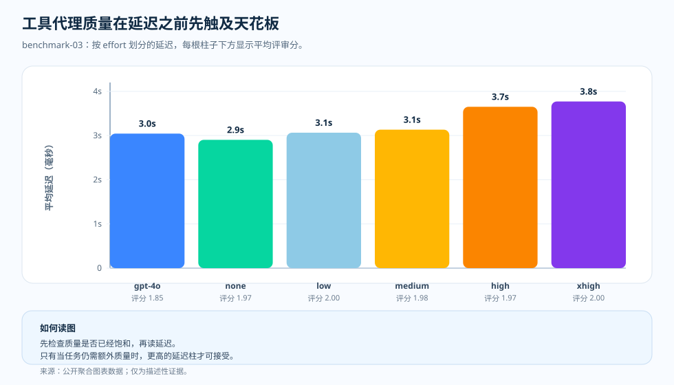

专题文章、benchmark-03 工具代理
工具代理：质量触顶之后，真正的变量就变成了延迟
当团队搭起一个用工具的代理、而它开始出错时，第一反应往往都一样：让它多想一点。这个直觉是讲得通的——工具类工作牵涉规划、选工具、维持中间状态、综合回答，所以"多推理"听起来应该有用。但还有另一种可能：当工具路径已经足够好、评分标准本就接近顶点时，额外的推理也许只让延迟和成本上升，分数却原地踏步。benchmark-03 就在这组工具代理任务上检验：这两种解读，哪一种成立。
我们为什么要检验这个
情形很常见。团队上线一个用工具的代理，看到它在若干情形下出错，最先想到的办法就是先把推理强度调高。这个理由是讲得通的：代理的活儿不是纯粹的回忆——它得做计划、 选对工具、带着中间状态，然后才综合出回答。在这么有结构的任务上，"让它多想 一点"听起来像最先该做的事。
但这里留下两种相反的读法，值得验证。额外的推理也许真的改善了工具规划、把 回答往上抬；又或者，工具路径和评分标准一起造出了一个天花板——一旦代理找到 一条足够好的通往答案的路径，再多的推理也只会在分数贴着顶点不动的同时， 徒增延迟和成本。benchmark-03 检验的，正是哪一种解读在一组测得的工具代理任务上、 而不是在抽象层面成立。
于是我们做了检验。benchmark-03 固定住这组工具代理任务，测试同一套模型与各档推理强度——GPT-4o 基线，随后是 GPT-5.2 的 none、low、medium、high、xhigh—— 并在每个配置上把平均评审分挨着延迟、成本和 token 形态一起读。结果值得如实 说出来：GPT-5.2 把质量推到了 GPT-4o 基线之上，但在 GPT-5.2 内部，各配置的质量 朝着一个天花板（约 1.97～2.00）聚拢，而成本、延迟、推理 token 却还在往上走。 下面的单页概览把这条信息一锤定音，随后各节再补上测得的细节。

问题
当工具代理的质量已经接近顶点时，额外的推理强度还能带来什么？
证据
benchmark-03 的质量、成本、延迟与 token 构成四张图。
发现
GPT-5.2 的质量在各档推理强度上都停在 1.97～2.00 的天花板附近，而成本从每请求 $0.002762 升到 $0.003499，延迟从 2.9s 升到 3.8s。
结论
把工具代理工作路由到能够到质量天花板的最低推理强度；更高的推理强度不是默认选择，而是要被成本和延迟正当化的开销。

天花板效应才是重点
benchmark-03 并没有给出一个简单的单调上升故事。GPT-4o 的平均评审分是 1.85。GPT-5.2 在 none 平均 1.97、low 达到 2.0、medium 平均 1.98、high 平均 1.97、xhigh 达到 2.0。相对基线这是质量的改善，但同时它也是一个天花板。
一旦好几个配置都聚拢在顶点附近，再去抬高推理强度就没有自动的意义了。下一份证据，来自延迟、token 形态，以及藏在聚合分数内部的失败模式。
这张图该怎么读
这张图用柱高来表示延迟，因为质量已经被压缩在顶点附近。X 轴是模型／推理强度配置，Y 轴是平均延迟（毫秒）。每根柱子下方的标签，是配对的平均评审分。
这张图有意不是直方图，而是被汇总过的配置之间的比较。如果两个配置的质量相近，那根更短的柱子就在问："多等这么久，到底还换来了什么看得见的东西？"
工具为什么改变了读法
工具代理的活儿包含选工具、维持中间状态、综合回答，这让它比短事实任务更吃力。同时这也意味着，聚合的质量分数可能盖住不同种类的行为：某个配置通过，也许是因为工具把大部分活儿干了；也可能是用对了工具、却因为总结得不好而掉了分。
图并不能省掉检查的必要，而是告诉你该去检查哪里。这一轮里哪个区间更吸引人，取决于你把门槛定在哪。如果你要严格的 2.00，最先够到它的配置是 low；如果接近天花板的分数已经满足评分标准，那么以接近基线的延迟满足它的，是 none。无论哪种，动作都一样——找到满足门槛的最低配置，在往更高的推理强度提之前，先读成本和延迟。
这意味着什么
工具代理的基准要做两种解读。先问：推理有没有改善正确性。然后再问：如果质量已经聚拢在顶点附近，哪个配置把延迟和 token 压力压住了。第二个问题不是附赠品——正是它让结果在基准测试之外也能用。
证据表
docs/blog/data/chart-data/cost-curves-effort/benchmark-03/quality.json，
请在证据仪表盘
（分发的图表数据）里
挨着延迟图和成本图一起读。

| 证据行 | 指标 A | 指标 B | 它补充了什么 |
|---|---|---|---|
| GPT-4o baseline | 评审分 1.85 | 平均延迟 3.0s | 强基线，但还不是天花板。 |
| GPT-5.2 none | 评审分 1.97 | 平均延迟 2.9s | 几乎相同的延迟，质量更高。 |
| GPT-5.2 low | 评审分 2.00 | 平均延迟 3.1s | 延迟略增，分数已到天花板。 |
| GPT-5.2 xhigh | 评审分 2.00 | 平均延迟 3.8s | 同样是天花板分，但更慢。 |
来源与证据边界
上面所有数字都能追溯到本仓库的公开产物，所有成本主张都按带日期的定价快照 算出。"停在能够到质量天花板的最低推理强度"这一路由习惯，是本文自己的运维推断。 下面两个 Tier 标明了：有文档记载的输入到哪里为止，推断又从哪里开始。
- [1] Tier 1 — 方法论契约：本仓库，
docs/05-methodology.md（v1.0）。每个组合 N = 20 个人工编写样本、R = 3 次重复、仅取公开聚合结果。图表解读正文都立足于这组冻结前提；误差棒是标准差而非置信区间，在 N = 20 下不主张 p 值。 - [2] Tier 1 — PAYG 定价快照：每个请求的成本按本仓库的
pricing/azure-openai-payg-2026-05.yaml算出。来源：Azure OpenAI 定价页（2026-05-19 访问）· 存档。标价一动，成本数字也随之变化。 - [3] Tier 2 — benchmark-03 这组工具代理任务的测量：本仓库，
benchmarks/03-tool-using-agent/analysis.json。它是天花板效应质量柱——GPT-4o 基线 1.85，以及在 1.97（none）、2.00（low）、1.98（medium）、1.97（high）、2.00（xhigh）区间内起伏的 GPT-5.2 各档——和延迟从 2.9s 拉长到 3.8s、对应成本从每请求 $0.002762（none）单调升到 $0.003499（xhigh）的来源。 - [4] Tier 2 — 渲染后的图表数据：本仓库，
docs/blog/data/chart-data/cost-curves-effort/benchmark-03/cost-per-request.json、quality.json、latency.json。与docs/blog/data/chart-data/token-composition/benchmark-03/tokens.json一起读，就能佐证：推理 token 从每请求 0 增加到 52.15，质量柱却没离开天花板。 - [5] 证据仪表盘：渲染后的 benchmark-03 质量与成本配对图，是审计同一批产物的可核查形态。
这组测量证明了什么、又没证明什么：它表明，在这类用工具的代理任务里，抬高推理 强度会让质量撞上天花板——GPT-5.2 的分数没有走出 1.97～2.00 的带——而成本却 在各档推理强度上一路上涨。它并不证明同样的天花板会在短事实回答、多步推理或 综合类工作里、在同样的推理强度水平上出现。每个专题各有自己的测量。
这些证据允许我们说什么
在工具代理工作里，有用的那句话不是"抬高 effort"，而是"找到那个能保住你真正需要的代理行为的最低 effort"。
实用准则
- 把质量图与同一个 benchmark-03 配置的成本图、延迟图配对着读，不要只看质量柱。
- 找到满足质量门槛——无论是严格的 2.00，还是可接受的接近天花板分数——的最低推理强度配置，把它设为默认。
- 把更高的 effort 当成需要被可见的分数变化正当化的成本和延迟。
- 信任之前先核查聚合：通过的配置可能靠的是工具，而不是推理。
- 工作负载形态一变，就重新测量：这个天花板只属于工具代理工作。
实用准则：在这类工具代理任务里，一旦质量触顶，就别再抬高推理强度。额外的推理强度带来的不是更高的分数，而是不断增加的成本和延迟。
下一篇： PTU/PAYG 交叉点：一条规划线，而不是容量结果 — 在这个预计的请求速率下，是继续按量付费，还是预留预置吞吐量？